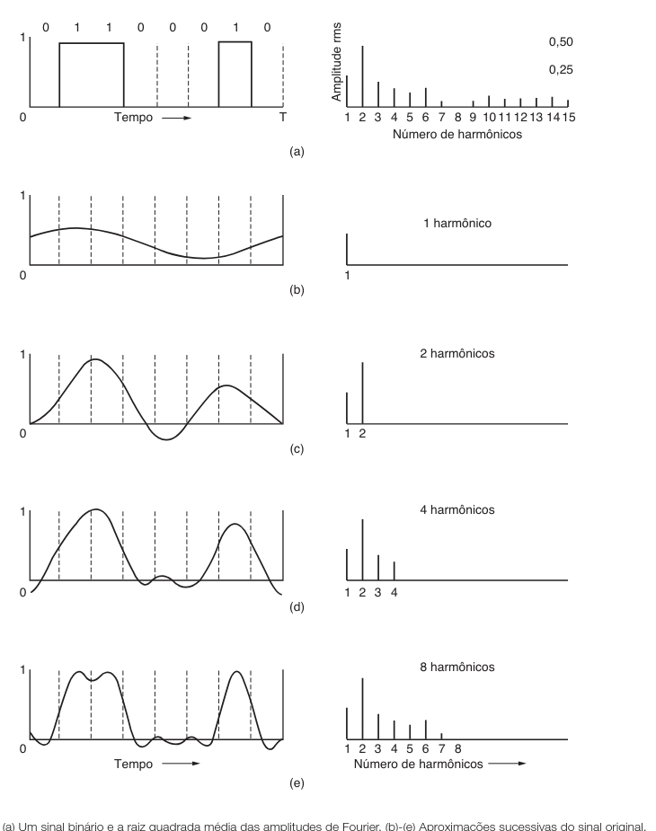
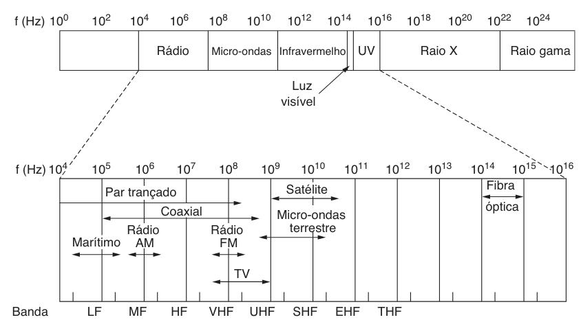

Professor: Gabriel Soares Baptista
A precisão técnica exige distinguir o contexto de aplicação: Velocidade vs. Armazenamento.
| Exp. (Pequenos) | Decimal | Prefixo | Exp. (Grandes) | Valor Numérico | Prefixo |
|---|---|---|---|---|---|
| $10^{-3}$ | 0,001 | mili | $10^{3}$ | 1.000 | Kilo |
| $10^{-6}$ | 0,000001 | micro | $10^{6}$ | 1.000.000 | Mega |
| $10^{-9}$ | 0,000...001 | nano | $10^{9}$ | 1.000.000.000 | Giga |
| $10^{-12}$ | 0,000...001 | pico | $10^{12}$ | 1.000...000 | Tera |
| $10^{-15}$ | 0,000...001 | femto | $10^{15}$ | 1.000...000 | Peta |
A Camada Física é o alicerce que define as interfaces elétricas e propriedades de envio de bits como sinais.
Qualquer função periódica $g(t)$ com período $T$ pode ser construída pela soma de senos e cossenos:
$$g(t) = c + \sum_{n=1}^{\infty} a_n \text{sen}(2\pi n f t) + \sum_{n=1}^{\infty} b_n \text{cos}(2\pi n f t)$$
Quanto maior a largura de banda, mais harmônicos passam e maior é a fidelidade do sinal.

Em um canal sem ruído de largura de banda $B$ e com $V$ níveis discretos de sinal:
$$\text{Taxa Máxima} = 2B \log_2 V \text{ (bits/s)}$$
Canais reais possuem ruído térmico. A capacidade máxima teórica depende da relação sinal/ruído (S/N):
$$\text{Capacidade} = B \log_2 (1 + S/N) \text{ (bits/s)}$$
1. Uma empresa precisa transferir um grande volume de dados de sua sede para uma filial localizada a 60 km de distância. Em vez de usar a Internet, eles decidem enviar um estagiário de moto ("Lei da Caminhonete"). O estagiário carrega uma mochila com 10 HDs externos, cada um com capacidade de 2 TB (Terabytes). A viagem leva exatamente 1 hora (3.600 segundos). Qual é a taxa de transmissão efetiva (largura de banda) desse sistema "motorizado" em Gbps? (Dica: Lembre-se da conversão de Bytes para bits e use a aproximação decimal para velocidade conforme o texto: $T = 10^{12}$).
2. Você está projetando um sistema de transmissão para um canal silencioso (sem ruído) com uma largura de banda limitada de 5 kHz. O sistema utiliza um esquema de codificação que permite 16 níveis discretos de sinal (voltagem). Utilizando a fórmula de Nyquist ($C = 2B \log_2 V$), calcule a taxa máxima de transmissão de dados (em kbps) que este canal pode suportar.
3. Considere uma linha telefônica padrão com uma largura de banda de 3.000 Hz. Devido à interferência, a relação sinal/ruído (S/N) é de 1.023 (o que corresponde aproximadamente a 30 dB). Utilizando a fórmula de Shannon ($C = B \log_2 (1 + S/N)$), determine a capacidade máxima teórica desse canal em bits por segundo. (Nota: $\log_2(1024) = 10$).
5. Um sinal de luz é enviado através de uma fibra óptica operando na banda de 1,55 mícron. Suponha que a atenuação nesta banda seja de 0,2 dB/km. Se o sinal inicial tem uma potência de 10 mW, qual será a perda total em decibéis (dB) após percorrer um cabo de 100 km sem repetidores?
8. Analise as afirmações abaixo sobre a Camada Física e marque (V) ou (F):
As ondas eletromagnéticas propagam-se pelo espaço livre, relacionando frequência ($f$) e comprimento de onda ($\lambda$):
$$\lambda f = c \approx 3 \times 10^8 \text{ m/s}$$

4. O texto afirma que existe uma relação imutável entre frequência e comprimento de onda: $\lambda f = c$. Sabendo que a velocidade da luz $c \approx 3 \times 10^8$ m/s:
6. Associe o Meio de Transmissão à sua característica principal:
(A) Par Trançado (UTP) | (B) Cabo Coaxial | (C) Fibra Óptica | (D) Fita Magnética
( ) Utiliza o fenômeno da reflexão interna total para confinar o sinal; imune a interferência eletromagnética.
( ) Meio de transmissão com excelente largura de banda, mas alta latência; ideal para backups massivos.
( ) Possui uma malha metálica de blindagem e impedância típica de 75 ohms para uso em TV a cabo.
( ) Utiliza o cancelamento de ondas através da geometria helicoidal para reduzir ruído.
7. Associe a Faixa de Frequência ao seu comportamento de propagação:
(A) VLF / LF | (B) HF / VHF | (C) Micro-ondas (> 100 MHz)
( ) Viajam em linha reta (visada direta), sofrem com absorção pela chuva e requerem alinhamento.
( ) Propagam-se rentes ao solo (Ondas Terrestres), acompanhando a curvatura da Terra.
( ) Tendem a ser absorvidas pelo solo, mas são refratadas pela ionosfera (Ondas Celestes).
10. O texto menciona que ondas infravermelhas não atravessam paredes sólidas. Por que isso é considerado uma vantagem de segurança e arquitetura para redes internas em comparação com ondas de rádio (como o Wi-Fi)?
11. Explique o conceito de "linha cruzada" (crosstalk) em cabos de par trançado e como a geometria helicoidal (o ato de trançar os fios) ajuda a mitigar esse problema físico.
| Item | Comutação de Circuitos | Comutação de Pacotes |
|---|---|---|
| Caminho Físico | Dedicado | Não dedicado |
| Rota | Fixa | Dinâmica |
| Ordem | Garantida | Pode sair de ordem |
| Falha de Switch | Fatal para a conexão | Contornável |
| Eficiência | Baixa (desperdício) | Alta (dinâmica) |
| Transmissão | Fluxo contínuo | Store-and-forward |
9. Explique por que a Comutação de Pacotes é mais resiliente a falhas de infraestrutura (ex: um switch queimado no meio da rede) do que a Comutação de Circuitos.
Na próxima aula teremos o Laboratório I: Topologia e Enquadramento.